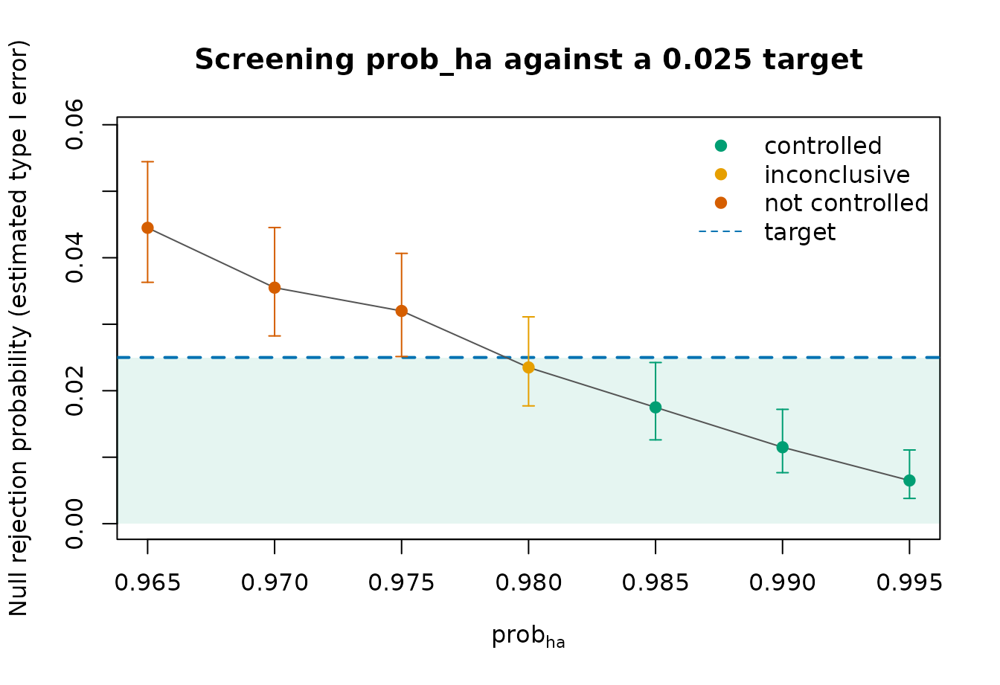

Calibrating prob_ha for type I error control
Source:vignettes/calibrating-prob-ha.Rmd
calibrating-prob-ha.RmdThe decision thresholds in a Goldilocks design are not guarantees of
its frequentist operating characteristics. In particular, setting
prob_ha = 0.975 does not by itself guarantee that the
complete adaptive design has one-sided type I error no greater than
0.025. Interim analyses, predictive stopping, the enrollment and
follow-up processes, and the Monte Carlo settings all contribute to the
probability of a successful trial under the null hypothesis.
This vignette demonstrates a focused calibration procedure:
- Prespecify a null data-generating scenario and a target type I error.
- Screen a finite grid of
prob_havalues while holding the rest of the design fixed. - Use Monte Carlo intervals to distinguish controlled, uncontrolled, and inconclusive candidates.
- Validate the selected candidate with more simulations and a fresh seed.
The result is evidence about the simulated scenarios, not a mathematical guarantee over every possible data-generating process. A design with a composite null may require several prespecified nuisance-parameter scenarios.
Design and null scenario
The example uses a two-arm design with a one-sided log-rank analysis.
Both arms have a 30% event probability by 12 months under the null. The
design permits futility stopping and stopping accrual for expected
success, but does not permit an immediate success claim at an interim
look because Qn = 1.
target_type1 <- 0.025
prob_ha_grid <- seq(0.965, 0.995, by = 0.005)
null_hazard <- prop_to_haz(0.30, endtime = 12)
calibration_design <- list(
hazard_treatment = null_hazard,
hazard_control = null_hazard,
cutpoints = NULL,
N_total = 300,
lambda = 5,
lambda_time = NULL,
interim_look = seq(100, 275, 25),
end_of_study = 12,
prior_surv = c(0.1, 0.1),
block = 2,
rand_ratio = c(control = 1, treatment = 1),
prop_loss = 0,
alternative = "less",
h0 = 0,
Fn = rep(0.10, 8),
Sn = c(1, rep(0.90, 7)),
Qn = 1,
N_impute = 100,
method = "logrank",
return_trace = FALSE,
ncores = 8
)Only prob_ha changes across candidates. In particular,
N_impute is fixed: it is part of the implemented interim
decision algorithm, not merely a precision setting for this calibration
exercise. The number of simulated trials, N_trials,
controls the Monte Carlo precision of the estimated operating
characteristics and can be increased during validation.
Screening a candidate grid
The following code runs 2,000 null trials for every candidate. These calculations are performed offline for the built vignette; their compact summaries are loaded from the accompanying data file.
screening_seed <- 67201
screening_results <- lapply(prob_ha_grid, function(threshold) {
do.call(
sim_trials,
c(
calibration_design,
list(
prob_ha = threshold,
N_trials = 2000,
seed = screening_seed
)
)
)
})
names(screening_results) <- sprintf("prob_ha = %.3f", prob_ha_grid)
screening_summary <- summarise_sims(screening_results)
screening_summary$prob_ha <- prob_ha_gridThe same seed is deliberately used for each candidate. Because the
candidates differ only in prob_ha, this applies common
random numbers and reduces irrelevant Monte Carlo variation in the
screening curve. Candidate results are therefore correlated, and their
marginal Monte Carlo intervals should not be interpreted as confidence
intervals for pairwise differences.
Under the null, the power column returned by
summarise_sims() is the estimated type I error. Its
power_mc_lower and power_mc_upper columns form
a 95% Wilson Monte Carlo interval. We apply the following deliberately
conservative screening rule:
- controlled: the upper Monte Carlo bound is at or below the target;
- not controlled: the lower bound is above the target; and
- inconclusive: the interval overlaps the target.
classify_type1 <- function(summary, target) {
ifelse(
summary$power_mc_upper <= target,
"controlled",
ifelse(
summary$power_mc_lower > target,
"not controlled",
"inconclusive"
)
)
}
calibration_screening$type1_status <- classify_type1(
calibration_screening,
target_type1
)
screening_display <- calibration_screening[c(
"prob_ha",
"n_used",
"power",
"power_mc_lower",
"power_mc_upper",
"type1_status"
)]
names(screening_display)[3:5] <- c(
"type1_error",
"type1_mc_lower",
"type1_mc_upper"
)
knitr::kable(screening_display, digits = 3)| prob_ha | n_used | type1_error | type1_mc_lower | type1_mc_upper | type1_status |
|---|---|---|---|---|---|
| 0.965 | 2000 | 0.044 | 0.036 | 0.054 | not controlled |
| 0.970 | 2000 | 0.035 | 0.028 | 0.045 | not controlled |
| 0.975 | 2000 | 0.032 | 0.025 | 0.041 | not controlled |
| 0.980 | 2000 | 0.024 | 0.018 | 0.031 | inconclusive |
| 0.985 | 2000 | 0.018 | 0.013 | 0.024 | controlled |
| 0.990 | 2000 | 0.012 | 0.008 | 0.017 | controlled |
| 0.995 | 2000 | 0.006 | 0.004 | 0.011 | controlled |
Plotting the calibration curve
The shaded area is at or below the target type I error. A candidate is classified as controlled only when its entire displayed Monte Carlo interval falls in that region.
screening_plot <- calibration_screening[
order(calibration_screening$prob_ha),
]
status_colours <- c(
"controlled" = "#009E73",
"inconclusive" = "#E69F00",
"not controlled" = "#D55E00"
)
point_colours <- unname(status_colours[screening_plot$type1_status])
y_max <- max(screening_plot$power_mc_upper, target_type1) * 1.08
plot(
screening_plot$prob_ha,
screening_plot$power,
type = "n",
ylim = c(0, y_max),
xlab = expression(prob[ha]),
ylab = "Null rejection probability (estimated type I error)",
main = "Screening prob_ha against a 0.025 target"
)
plot_region <- par("usr")
rect(
plot_region[1],
0,
plot_region[2],
target_type1,
col = grDevices::adjustcolor("#009E73", alpha.f = 0.10),
border = NA
)
abline(h = target_type1, col = "#0072B2", lty = 2, lwd = 2)
lines(screening_plot$prob_ha, screening_plot$power, col = "#555555")
arrows(
screening_plot$prob_ha,
screening_plot$power_mc_lower,
screening_plot$prob_ha,
screening_plot$power_mc_upper,
angle = 90,
code = 3,
length = 0.04,
col = point_colours
)
points(
screening_plot$prob_ha,
screening_plot$power,
pch = 19,
col = point_colours
)
legend(
"topright",
legend = c(names(status_colours), "target"),
col = c(unname(status_colours), "#0072B2"),
pch = c(19, 19, 19, NA),
lty = c(NA, NA, NA, 2),
bty = "n"
)
The grid is discrete, so this plot does not justify interpolation to
an untested value. Nor is the curve required to be perfectly monotone:
changing prob_ha changes completed-data success
classifications, predictive stopping, and potentially the final sample
size. Here we select the smallest screened value classified as
controlled, rather than claiming it is the unique or optimal
threshold.
controlled_candidates <- calibration_screening$prob_ha[
calibration_screening$type1_status == "controlled"
]
selected_prob_ha <- min(controlled_candidates)
selected_prob_ha
#> [1] 0.985Independent validation
Selecting a candidate because it performed well in the screening
simulations introduces selection bias. The selected design should
therefore be rerun with a fresh simulation seed. The validation below
keeps all prespecified decision settings fixed and increases only
N_trials, from 2,000 to 10,000.
validation_result <- do.call(
sim_trials,
c(
calibration_design,
list(
prob_ha = selected_prob_ha,
N_trials = 10000,
seed = 67202
)
)
)
validation_summary <- summarise_sims(list(
"fresh-seed validation" = validation_result
))
validation_summary$prob_ha <- selected_prob_ha
validation_summary$type1_status <- classify_type1(
validation_summary,
target_type1
)
validation_display <- calibration_validation[c(
"prob_ha",
"n_used",
"power",
"power_mc_lower",
"power_mc_upper",
"type1_status"
)]
names(validation_display)[3:5] <- c(
"type1_error",
"type1_mc_lower",
"type1_mc_upper"
)
knitr::kable(validation_display, digits = 4)| prob_ha | n_used | type1_error | type1_mc_lower | type1_mc_upper | type1_status |
|---|---|---|---|---|---|
| 0.985 | 10000 | 0.0182 | 0.0158 | 0.021 | controlled |
The fresh-seed validation is the relevant assessment of the selected candidate. If it is inconclusive or not controlled, the candidate set or simulation size should be reconsidered and another independent validation planned; repeatedly selecting against the same validation simulations would turn them into an extension of the screening data.
Extending the calibration
For a target of 0.05, change target_type1 and choose a
grid appropriate to that target. Do not assume that
prob_ha = 1 - target_type1 controls the type I error of the
full adaptive design.
When the null contains nuisance parameters, repeat the candidate grid for each prespecified null scenario. A simple conservative requirement is that the upper Monte Carlo bound be below the target in every scenario. This establishes simulation evidence only on that finite scenario set; identifying a least-favourable configuration and accounting for searches over many scenarios remain design-specific statistical responsibilities.
After calibrating type I error, simulate the selected design under
one or more clinically relevant alternative scenarios to estimate power
and expected sample size. Those simulations should retain the selected
prob_ha and the same prespecified values of
N_impute and N_mcmc intended for the
trial.